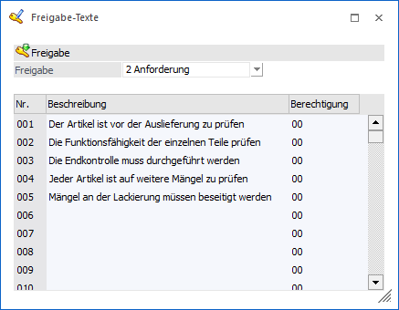

Die Eingabe der Freigabetexte erfolgt im Programmpunkt
1 WinLine START
1 Freigabe
1 Freigabetexte

Es können folgende Felder bearbeitet werden:
Ø Freigabe
In der Auswahlbox kann gewählt werden, welcher der drei Freigabetypen (Freigabevermerke, Prüfungsanforderung, Ablehnung/Sperre) bearbeitet werden soll.
Hinweis
Der Hinweistext für den Freigabetyp "ohne QMS" wird bei "1 - Vermerke" unter der Nr. 000 hinterlegt.
Ø Beschreibung
An dieser Stelle kann der Text vom Status hinterlegt werden, wobei pro Freigabetyp 99 Texte definiert werden können. Diese Beschreibung wird in weitere Folge in den Stammdaten, in der Belegbearbeitung und in der Finanzbuchhaltung angezeigt, sobald der Datensatz aufgerufen wird.
Ø Berechtigung
Für jede Freigabe kann ein Berechtigungsprofil vergeben werden. Wenn der Anwender eine Freigabe aufruft, wird geprüft, ob dem Benutzer eine Benutzergruppe zugeordnet wurde, welche in dem jeweiligen Profil enthalten ist und ob somit eine Bearbeitung bzw. eine Auswahl des Freigabestatus erlaubt wäre (nähere Informationen entnehmen Sie bitte dem WinLine ADMIN - Handbuch).
Hinweis
Benutzern des Typs "Administrator" oder mit der Administratorenberechtigung "Benutzeradministrator" steht in der Auswahlbox der Punkt ">> Neues Profil" zur Verfügung. Über die Anwahl dieses Eintrags kann in der Folge ein neues Berechtigungsprofil angelegt werden.
Beispiel
Wird ein Artikel neu angelegt, soll er standardmäßig den Status "Prüfungsanforderung" erhalten, da er auf alle Fälle zu prüfen ist. Daher gibt es bei der Berechtigung keine Einschränkung. Nach erfolgter Prüfung wird der Artikel zum Verkauf freigegeben. Diese Freigabe darf nur vom Lagerleiter erteilt werden. Daher kann der Status "Prüfung erfolgreich abgeschlossen" nur von einem Benutzer mit der Berechtigung "Lagerleiter" vergeben werden.
Tabellenbuttons

Ø Ausgabe Excel
Durch Anwahl des Buttons "Ausgabe Excel" wird der Inhalt der Tabelle an Microsoft Excel übergeben.
Ø Tabelleneinstellungen speichern
Die Spalten einer Tabelle können grundsätzlich an beliebige Positionen verschoben, bzw. in der Breite entsprechend angepasst werden. Durch Anwahl des Buttons "Tabelleneinstellungen speichern" werden die Einstellungen benutzerspezifisch gespeichert und bei dem nächsten Aufruf des Programmpunktes wieder vorgeschlagen.
Ø Gesamteinstellungen speichern
Im Gegensatz zu "Tabelleneinstellungen speichern" können mit "Gesamteinstellungen speichern" mehrere Tabellenaufbauten gespeichert und nach Wunsch geladen werden. Zusätzlich werden Sonderfunktionen der Tabelle (z.B. "Spalte gruppieren") ebenfalls bei der Speicherung bedacht.
Buttons

Ø Ok
Durch Anwahl des Buttons "Ok" bzw. der Taste F5 werden die Texte gespeichert.
Ø Ende
Durch Anwahl des Buttons "Ende" bzw. der Taste ESC wird der Programmbereich geschlossen und alle vorgenommenen Änderungen verworfen.